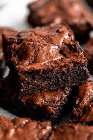

Brownie

Let’s skip the nonsense and make a super easy, lazy brownie recipe you can actually whip up in 30 minutes with almost zero fuss:
Lazy Brownie Recipe (Single Pan, No Mixer)
Ingredients
- 1/2 cup (115g) butter
- 1 cup (200g) sugar
- 2 large eggs
- 1 tsp vanilla extract
- 1/3 cup (35g) unsweetened cocoa powder
- 1/2 cup (65g) all-purpose flour
- 1/4 tsp salt
- Optional: 1/2 cup chocolate chips or nuts
Instructions:
- Preheat oven: 175°C (350°F). Grease an 8×8-inch (20×20cm) pan or line with parchment paper.
- Melt butter: In a microwave-safe bowl, melt butter (about 1 min).
- Mix wet ingredients: Add sugar, eggs, and vanilla. Stir with a spoon until smooth.
- Add dry ingredients: Sprinkle in cocoa, flour, and salt. Stir until just combined. Fold in chocolate chips/nuts if using.
- Bake: Pour batter into pan and smooth the top. Bake 20–25 minutes. A toothpick inserted should come out mostly clean (a few crumbs are fine).
- Cool & slice: Let cool 10 minutes, then cut into squares.
Now just put in a plate and eat it!
Go back